今年有幸抽到了Google IO的门票，而且公司会给额外的带薪假让去参会(我是自费的，部分同事会有报销)。正好二月份领了证，准备带上小烦只当去度蜜月顺便感受一下IO了。故有了这次的美国之旅。
去美国首先要办美签，网上搜索了一通，最后是按照这个帖子上的内容去准备的，上面介绍的非常详实，感谢帖子的作者，分享是件美好的事情。
我喜欢早做准备。二月末收到IO申请通过的邮件，看完美签攻略，决定去美国后即着手准备美签材料，同时为了增加材料的可信性又购买了可退的旧金山往返机票，单人往返只要两千七你能信！买机票后还有一件有意思的小事：买票时是三月份，当时五一假期的放假时间安排还是只有5.1当天，而IO的会议时间是5.7-5.9。因为公司给带薪假的话肯定只是足够覆盖参会的时间就可以了，5.7-5.9是周二-周四，飞机往返各一天，正好就一个周，再加上前后两个周末，所以机票时间就订到了5.4-5.12。这样时间虽然足够，但是行程比较紧凑，就只当去美帝走马观花一次吧。然后过了几天之后南航通知航班时间变动，起飞时间推迟了一个小时。再过了一段时间之后发布新的五一放假安排，五一放假时间改到了5.1-5.4，4.28和5.5调休。这么一改的话就可以连上五一假期了，而且带薪假就可以多给一天。好不容易去一趟美国肯定想尽量多玩几天的，虽然机票改签费用很贵，但是我还是打算改签。打电话给南航准备改签机票到5.2号(5.1号没有这趟航班），客服查询之后告知因为该航班起飞时间之前有延迟，所以我有一次免费的改签机会，那不正好美滋滋。最后机票时间5.2-5.12，时间就稍微充裕一些啦。

面签时间约到了三月末，面签前在网上查询了各种面签信息和要注意的细节。当时天朝和美帝正因为中兴的事情闹得厉害，我查到美签的时候如果大学的专业和信息、计算科学相关，或者公司名和信息技术有关，面签被block的几率很大。虽然我大学学的专业课程都是数学相关，但是专业名称就是坑爹的信息与计算科学，而且公司名称也是信息技术有限公司，简直就是美签被拒的模范样本，心里不免很是担心。面签当天，材料准备妥当，到了上海领事馆，我俩排队的时候还盘算着要不要换到某个面签官看起来比较和善一点的窗口，后面心一横，既来之则安之吧。
到了窗口和面试官打个招呼，问了去美国的目的：蜜月旅行；之前去过哪些国家：泰国；要去哪几个城市：旧金山、洛杉矶等；结婚证看一下：递过去；有没有上海居住证：有，递过去。然后就给了个单子，告知你们的申请通过了，可以回去等护照了。哇，简直惊喜！我还担心那么久！还好元旦刚去了泰国！还好拿了结婚证！还好有上海的居住证！这些东西都是在前半年之中办好的，没想到这就派上了用场！不过美签虽然过了，但是不知道给的是不是十年签证，焦心了好几天之后终于等到通知可以去拿护照，马上跑去就近的银行拿，看到签证信息是十年才安心下来，美签就算是过啦，剩下的EVUS就很简单了。
美签过了之后，接下来自然就是要安排行程了。5.2-5.12的假期，IO是7-9号，所以5.2-5.7有几天空闲时间（中美有时差，这边5.2早上的航班，到达之后是当地的5.2上午），查询各个景点之后准备自驾一号公路。✈️落地旧金山，旧金山租车后开车沿一号公路到洛杉矶，洛杉矶环球影城玩一天，再返回旧金山还车，然后打车回IO的举办地-山景城附近的圣何塞住宿，IO之后去旧金山玩一天，之后从旧金山回国。
自驾就要用车，美帝租车比较便宜，并且是第一次在美国租车，对比了Avis、Hertz等，最后在租租车上租了一个中级SUV，加上保险等五天总共才两千余元。考虑到后面几天参会都有接驳车，而且会场也不提供停车场，IO后也没什么行程了，所以便只租了前几天（给后面埋了个坑）。
酒店的话，美帝住宿实在是太贵啦，但是我又不想住太简陋，毕竟也算蜜月旅行💃。IO期间山景城附近的酒店正贵，提前订好的AirBnb又临时被房东取消，买IHG的积分又被砍单！当时正好入坑IHG，各项比价之后便忍痛官网预定几晚，加上几晚的AirBnb，10晚共约3000美元左右。（又是一个坑）
- 5.2 蒙特雷湾IHG
- 5.3 圣芭芭拉 AirBnb
- 5.4 洛杉矶 北好莱坞IHG
- 5.5 洛杉矶 Airbnb
- 5.6 - 5.8 圣何塞IHG
- 5.9 旧金山渔人码头喜来登
- 5.10 旧金山渔人码头IHG
四月份又有其他枝节。因为对住的地方的小区环境不是很满意，很早就准备四月份合同到期之后换房子，到期前半个月跑了很多地方，看了很多房子也没找到合适的，就想着不行就再住一年吧，虽然外边环境不太好，房子总归还是干净舒适的。三月底便和房东又续签了一年的合同。四月中旬的时公司附近的人才公寓有人要退租，HR问我要不要住(我之前就提交了申请，当时是在排队中)，当下就决定要搬到过来：一是这里房租有优惠，比原来住的地方一个月便宜了一千多；二是这边公寓建好没多久，环境比较好，又没那么多讨人厌的大爷大妈，我是真受不了原来老公房的那些个邻居。
定下来搬家之后，原来的房子就比较尴尬。刚续签了一年的合同，交了三个月的房租，马上就说搬走的话房东应该会不高兴，押金给不给退都不好说。后面细节不多说，最后转租给了一对情侣之后，房东答应我可以给退房退押金。新房子搬家日期定在了5.1号，四月末我在家匆匆打包了东西，5.1号把东西搬到了新的住处。我俩虽然住的地方不大，东西是真的多，十几箱的杂物！叫了个中型卡车才放的下所有东西。当晚忙到凌晨，东西还堆在房间，实在无暇全部整理。草草铺了个床，收拾了一下明天要带的东西，两人都实在折腾不动了。匆匆睡了几个小时，第二天一早就打车去了机场。啊！五月以忙碌开头！
头一次洲际航行，心里满是新鲜。选了个靠窗的座位，不时看看窗外景色（虽然除了云和海什么也看不到），看看电影，困了就眯一会，倒也不觉得时间漫长。早上空姐发入境单，告知相关填写事项，打开舷窗帘，外面正是朝阳初起，远处已隐约可以看见陆地了。
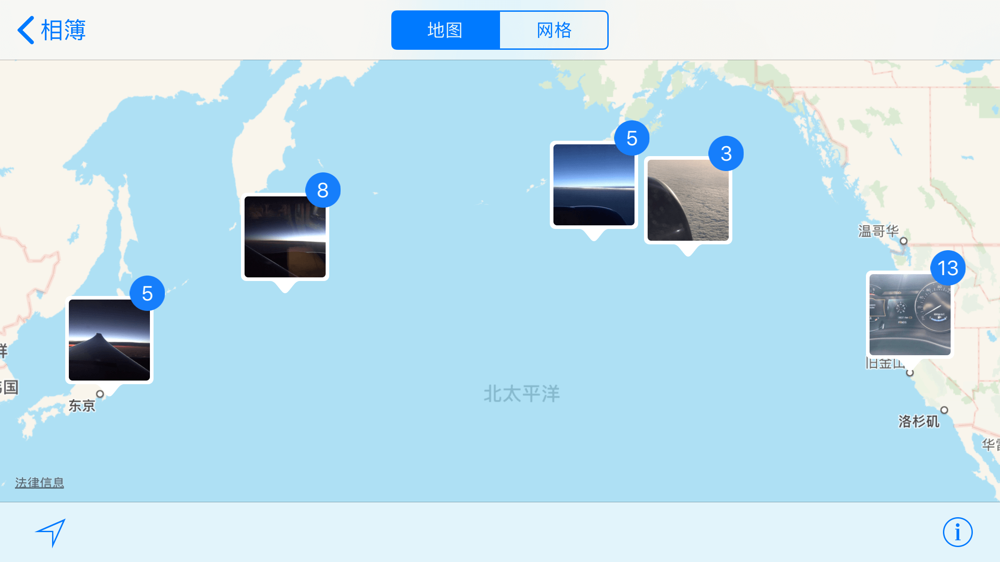
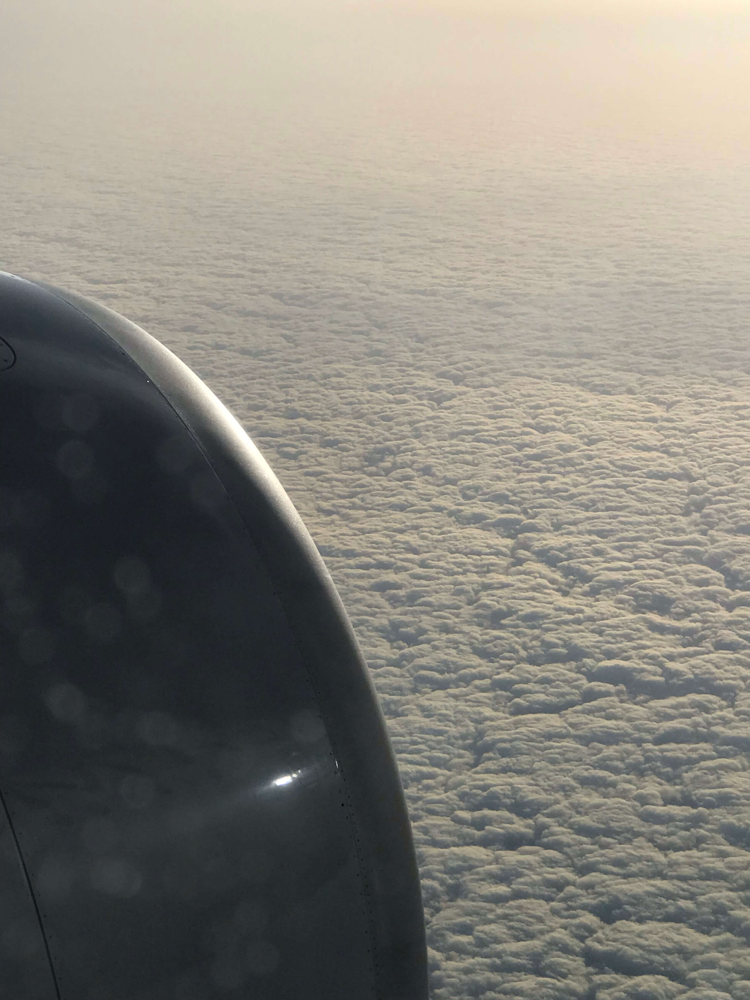
入境时排队许久，美国海关入境检查比较严格的原因吧，几个检查通道通过速度都比较慢。排队时我又想到网上说检查时可能会检查手机，都到入境检查这了可别出什么岔子，就删掉了手机上所有不清真的内容🙈。排队焦躁，心急难耐，两个多小时后终于排到我们。检查官是一个华裔男人，问的问题都是英语，语速较快，我俩勉强听懂前面几个问题给予回答，后面的问题，问了好几遍我们也没听清，只得嗯嗯嗯？后面逼得他直接中文问话：什么时候认识的！我俩忙不迭中文回答大学认识的，他脸上无奈，便直接给我们过了，嘻嘻。过了海关，取完行李，便算是正式踏上美国土地。美帝，我们来啦！
出海关去车行取车。美国这边租车和国内不一样，汽车按照功能、尺寸、价位等分为几个车型组，预定的时候预定某个车型组，实际拿到的车型就是车型组中的某一个。这次给的是个林肯的SUV，车子很新，上手开起来也还不错。开启Google Map导航，出发今天目的地：蒙特雷湾！

初次美国开车，感觉很不一样。美西地广人稀，道路宽敞，车辆不算很多，开车又普遍较快，正合我意😎。路上风景很美，从旧金山一路往南，路上经过城市，经过渔村，经过农场，经过冷杉林，经过麦田，经过山路十八弯。风景美如画，小烦晕成狗，躺在后座，连个照片都没力气拍了。
头一次用谷歌地图，和高德地图不太一样，对美帝交通规则又不是很熟悉，下午到达酒店时已闯了三个红灯、违反了数个交通标识。我心里惊恐，这得扣多少分啊。网上一查询，美帝一个红灯罚款三百刀？心里凉凉，想着这才头一天，后面几天还要不要开啦？还好同事给我宽心：这边路上都没什么摄像头的，只要不当场被抓到就基本没关系。方才安心一点，想着后面开车的时候要更注意点，车还是要开的嘛。
在酒店办好入住，一进门，这怎么回事？屋顶低矮，房灯昏暗，房间里拖鞋也没有，牙具也没有，淋浴也不习惯，自来水冷热还不均匀！好歹是两百多刀一晚的酒店，怎么还不如国内的全季水平！难道美帝的酒店就是这般贵且差？当下大不满意。肚子又咕咕响，还是先去吃饭吧。
美西着实地广人稀，出门基本都要靠开车。网上找了一家附近的评分还不错的越南餐厅，距离四五公里，便驱车前往。刚到美国，开了几个小时的车，兴奋劲犹在，加上肚子空空，越南菜竟也感觉如此好吃。来之前看网上说有人来美国，行李箱带了半行李箱的泡面，甚至还有带小饭锅准备自己煮饭的，我心里诧异，有这必要嘛，美国餐厅种类不是多得很，再说超市里啥东西买不到，而且这不随便找个越南菜就挺好吃的啦？
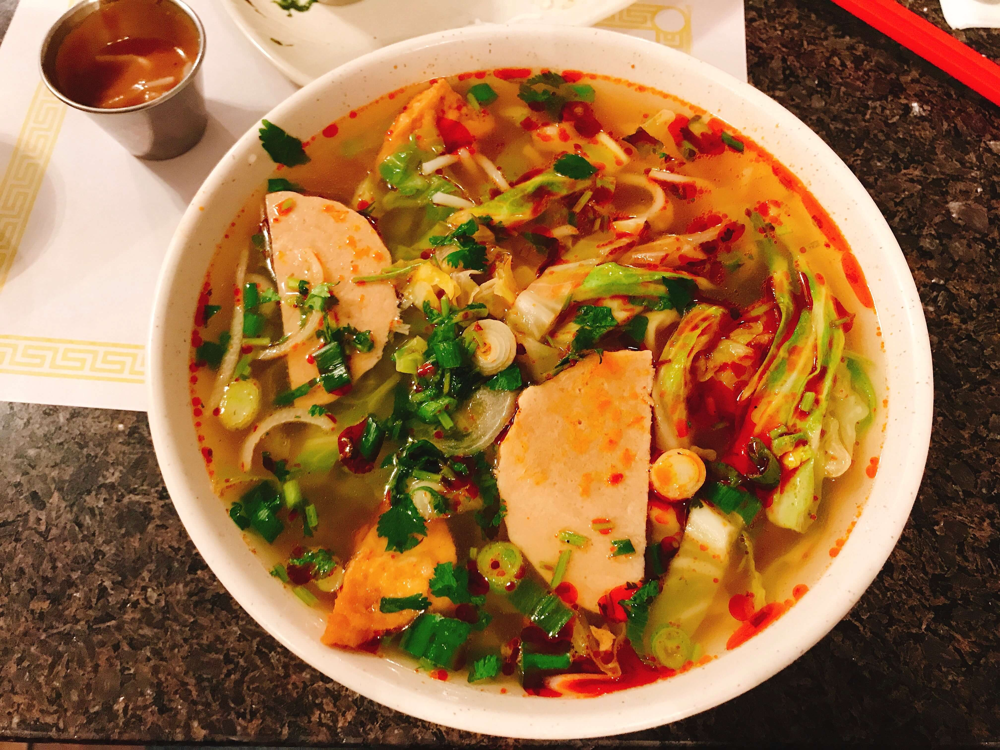
饭毕回去，天已经黑了。这一天，从早上五点多起床到机场，机场等候三个多小时，转机到武汉两个小时，又十三个小时的飞行，海关排队三小时，开车到蒙特雷五个多小时，吃完晚饭，回到酒店后才到当天晚上七点多。这一天，三十多个小时的奔波，可真是打了鸡血的一天，想发个朋友圈，又忍住了。
早早的躺下睡了。时差原因，一晚也没睡好。窗外又似乎有海浪的声音，五点多便醒了。随便刷刷手机，看着大家熟悉的生活，才隔了一天，我却躺在遥远的大洋彼岸陌生酒店的床上。终于捱到七点多酒店早餐供应，这早餐，观感实在不想多说，口味，填饱肚肠而已吧。
饭毕出发17英里路，这里算是一号公路精华段的开端。这里是一个富人聚居的地方，后面开发成了私人的景点。不过我跟着导航开车进来，一直到开进来也没遇到售票处在哪里，一不小心还逃了个票😅。这里像一个大公园，住宅不多，有很多高尔夫球场，另外一边就是太平洋的沙滩了。第一次近距离的看到太平洋，海风略咸但很清新，海鸟在头顶盘旋，海水，海水怎么可以这么湛蓝！

随后的一号公路，自驾圣地果然诚不我欺。语言实在无法形容景色的震撼，还是看图吧，虽然图片也只能拍出实际效果的十分之一。路上有很多停车点公认驻足观赏，一路上我们走走停停，总是有极美的景色想停下来欣赏，差点没在日落前赶到目的地。网上看自驾一号公路就是要把握好时间以免晚上赶不到圣芭芭拉，果然如此。


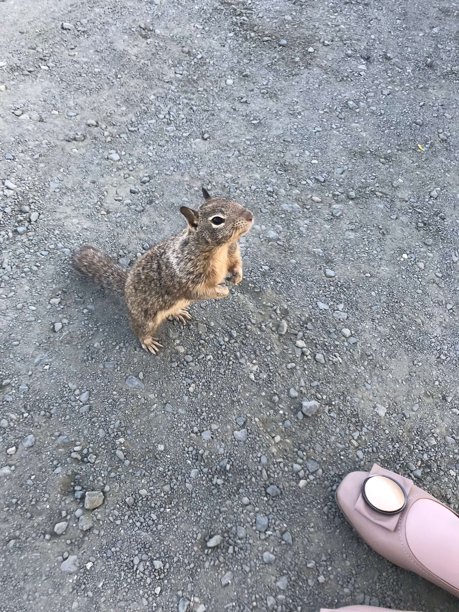


晚上到圣芭芭拉。晚餐在一个墨西哥餐厅解决，emm，第三顿，我的中国胃开始有点思乡。住的是AirBnb，镇上的一座民宅中。这里是居民区，没有太多商业设施，每户都是独栋，整齐的坐落在道路两旁。各家都是没有大门的，门前停着车子，院子里种了许多花草。晚上没什么车辆经过，整个居民区都很安静。静谧祥和，花草成荫，漫步其中，只感觉，这才是生活该有的样子啊。
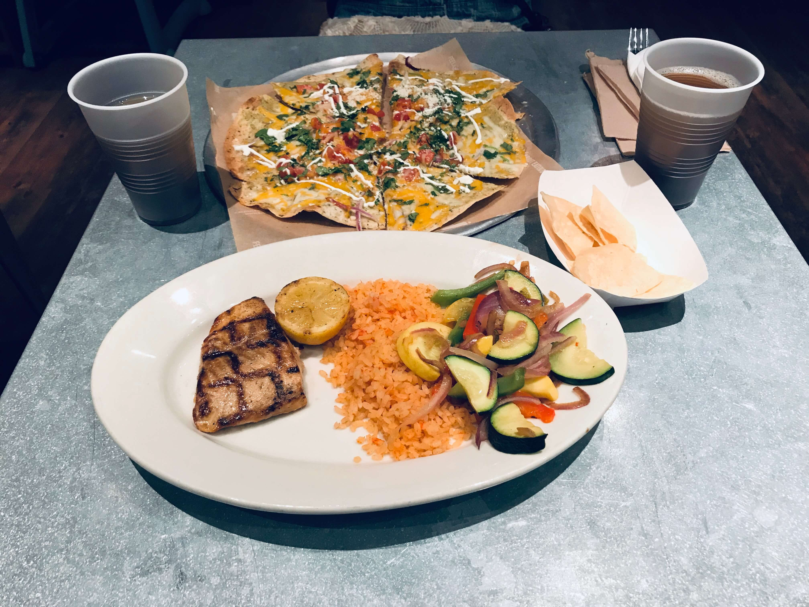


第二天下午到达洛杉矶，这一段的风景就没有前一天那么震撼了。先去了圣莫妮卡海滩，游客密密，景色平平，比基尼小姐姐倒是不错，可惜咱看不得呀。我俩不喜欢在人堆里凑热闹，便改道去瞻仰一下好莱坞标志。上山的路弯弯曲曲极不好走，又一直找不到停车场，折腾到下午四点多才停好车，一通拍照后，小烦实在是没电了，便赶往酒店休息，取消了接下来的格里菲斯天文台。

休息到傍晚，肚子饿了，周边搜了一圈是在没什么可吃的，附近倒是有一个KFC，要不去感受一下美国开封菜吧，虽是快餐，果腹还是可以的。卧槽！咸的要死！我吃了几口实在吃不动，弃堡跑路了。至于晚上具体吃了什么东西果腹，我已是记不清了。
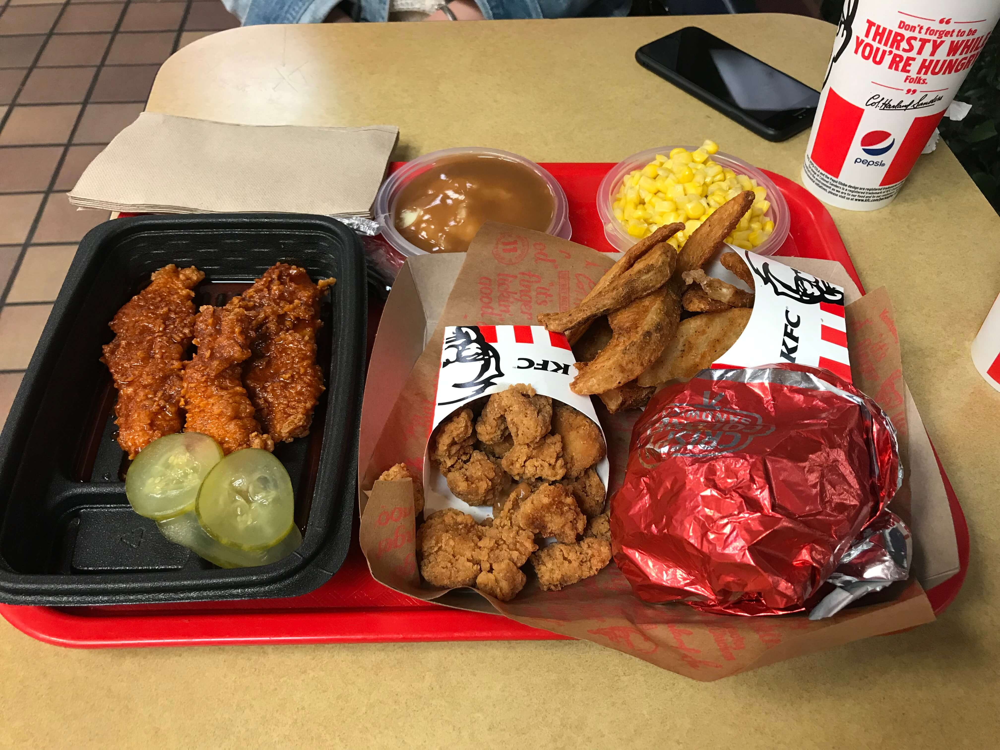
第二天依旧是酒店早餐，虽吃的不习惯，好歹能下咽，比KFC的汉堡是好多了。环球影城倒是度过了开心的一天。
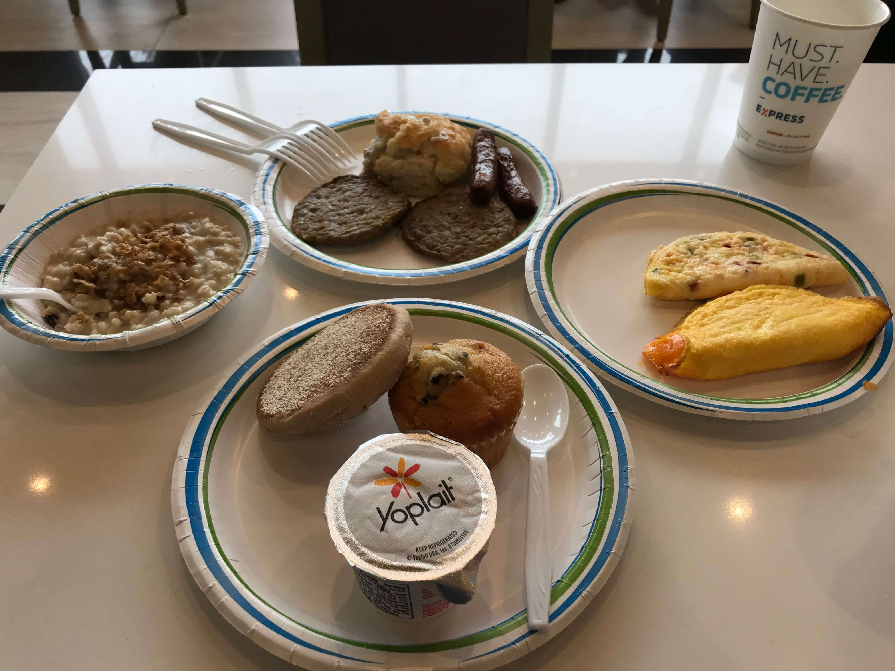

晚上住在洛杉矶的Airbnb，我俩实在是吃不动这里的食物了，正好房东家里有厨房可以用，便开车到附近的超市准备买点面做一顿🍅🥚🍜。到超市我先去泡面区，不行咱就屯些泡面呗。然而，现实残酷，这里的泡面只有很少几种，并且都是日韩产的，看样子也是美国口味，看包装就让人没有吃的欲望，只好买了些面条作罢。回去做面细节不表，吃到的时候我都要哭了好吗，虽然连筷子都没有，这绝对也是几天来吃的最美味的一顿！
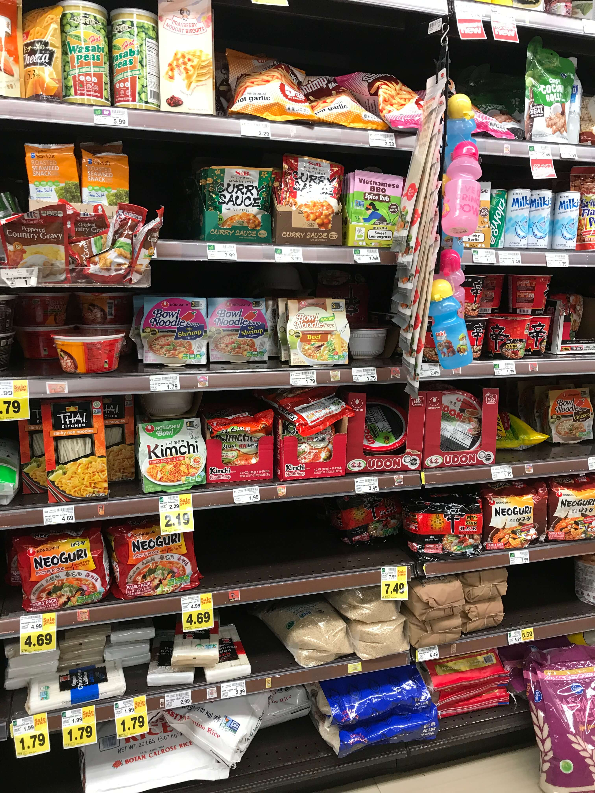
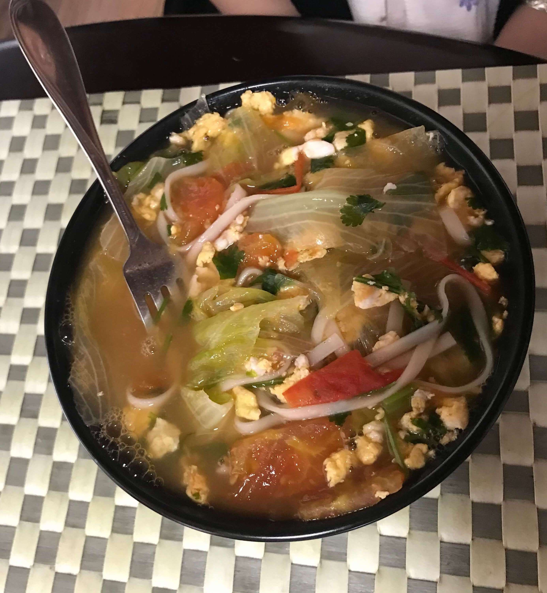
睡醒之后便要出发回程了。回程走五号公路，景色和来时大不同，两边都是茫茫的荒野，目之所及都是四五十公分高的灰色野草，天边是暗黄色的不知道什么名字的山脉，大有美国西部特色。这一路开车极爽，景色美，路上车少，车速快，又不担心限速的问题，半路在休息区歇息了一会，还碰到了骑摩托车旅行的女骑士，摩托超帅！来一张！
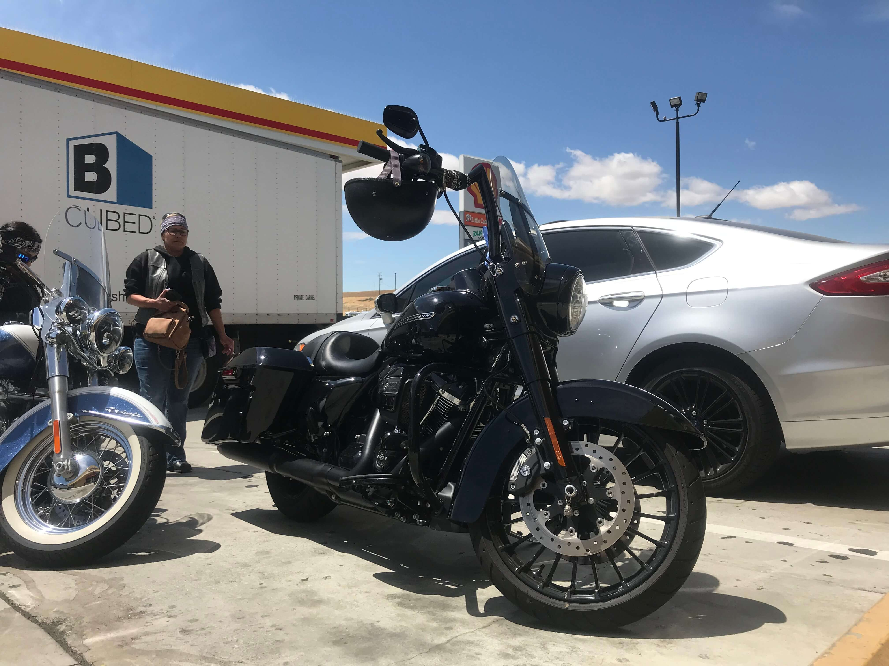
下午就飙到了圣何塞。先放下小烦到酒店，我去旧金山还车，还车倒没有想象那么麻烦，到了车行归还钥匙就可以直接走了。Uber打车回IO会场领纪念品，车费六十刀！心痛。
我司同样抽中门票的还有同组同事，只不过我们行程不一样。他晚上也住圣何塞离我们不远的酒店里。第二天约好一块坐IO接驳大巴去会场，十点的开场演讲，我们八点多到的大巴停车场，没想到路上会有那么堵，到地方的时候已经十点多了。到会场内赶紧找地方坐，会场前面已经坐满了人，我们只得坐在会场后面的草坪上。太阳真是毒啊，半小时手就晒黑了，才知道原来发的纪念品中的防晒霜真的不是开玩笑。

IO总共三天，过程不细表。大概就是乡下人进城，走马观花吧。我本身不喜欢太凑热闹，晚上的party没有参加，英语听力和口语又不太好，Sessions只是重在参与。来这里更多还是体验大于实际，总体体验还是挺不错的，英语确实需要好好练。


5.9号下午IO结束，我们车已经还了，打车又太贵，便和同事商量了一下行程，后面乘他们的车一块去旧金山。来了好几天了还没去购物，就去了旧金山旁边的奥特莱斯，下午才到，赶在天黑前买了一个包，两双鞋。几个人都饥肠辘辘了，同事开车带我们去了奥特莱斯附近的一家四川火锅店，卧槽！四川火锅店！感动哭了好么！IO三天吃的都是些什么玩意！越南菜墨西哥菜美国菜日本菜都是些什么玩意！

同事和女朋友来过美国几次，可是个老司机，晚上开车送我们去酒店的路上才开始找当晚的住宿，说这几天都是当天找住宿，开车也灵活，就看哪里便宜方便就住哪里，完全不用担心找不到地方住。不过旧金山的住宿就贵很多了，同事女友找了一圈也没有特别合适的地方，我提议要不就和我住同个酒店，一搜索，同样房型价格比我当时订的贵了7️⃣0️⃣刀！我又查了第二天的住宿，同样便宜了5️⃣0️⃣多刀！两晚一百多刀的差价，蓝瘦哇！这可真是没经验吃大亏。同事女友说可以尝试BRG，但是由于当晚就要入住了，太晚了，BRG失败，前台倒是送了两盒巧克力，70刀的巧克力！下次再也不提前订了！和同事及女友商量后当晚就一块住在我们订的房间了，他们也省得奔波，费用平摊，我们也把搭他们车的费用平摊。整挺好。
这个酒店房间煞是怪异，隔壁房间居然有个门能通到我们房间，虽然有门关着，但是门底部并没有密封，隔壁房间男生又一直在说着不知是笑话或是什么东西，他的女伴不停地笑啊笑，声音很大。哎，三百多刀的酒店，就这居住品质，我无言以对。

住的是渔人码头附近，第二天天气不错，只是海风还挺冷的。去了渔人码头逛逛，恶魔岛看起来完全没有说的那么环境险恶嘛，渔人码头还有其他什么来着？又开车体验了一下旧金山的城市道路，道路高低起伏，原来这里也是山城啊。又去双子峰，远远的看了金门大桥，山顶风很大，很冷，拍了些照片就下山了。又说去旧金山市内的一个商店逛逛，迫于实在找不到停车位，便去隔壁市的其他店了，中午吃了中式快餐-panda express，米饭虽然比不上自己做的，不过相比前几天吃的已是香太多。跟着老司机就是好啊，我们前些天吃的都是些什么玩意！可怜了我的中国胃！


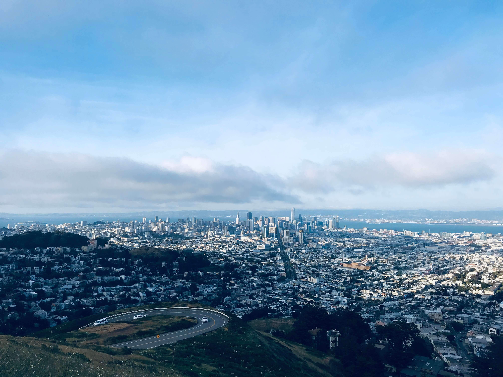
旧金山黑人流浪汉超多，路上还听同事女友说同事头一次来旧金山晚上不敢出门的趣事，这就要亲身试验了。傍晚时气氛还行，到路边Dicos买了快餐准备带到酒店吃，买完之后出门，天色已经渐渐暗下来了，路上流浪汉更多了，看着我们的眼神也相当不善，气氛就开始紧张了起来，天色愈黑，愈觉得紧张，我们加快脚步跑回酒店，哈哈，也不敢出门了！第二天傍晚的时候，我托同事在amazon上买的apple watch到了酒店不远的自提点（我刚注册的amazon账号被砍单了），我看离得不远，便急着去取，找了路边一个不知名的共享单车骑车前往，以为很快能骑到，却忘记了旧金山可是山城，道路上下不平，单车又沉重，两公里路吭哧了二十多分钟才骑到，半路天就黑了，路上人又少，给我小胆子吓得，取完watch之后实在没胆再骑回去了，还是叫了个Uber回酒店，害的小烦担心😁。
旧金山两日，便要作别了。又是十多个小时的飞行，落地，归国，在入关时看到入关提醒，新鲜水果不能带入境，只好把没吃完的樱桃扔垃圾桶了。没想到过了关之后在书包里发现一个不知道什么时候放进去的苹果，原来这些东西不怎么检查的，小烦大为懊恼，那么好吃的🍒就丢掉了！
此次在美国待了十天，花费五万余元，还是相当奢（làng）侈（fèi）的，仅是住宿这一项就两万多，实在是太罪过了。没经验吃大亏，这次旅行也算一次踩坑之旅了。虽然住宿坑爹，车没租好，饮食受罪，购物太少，但是风景很美，自驾舒服，人也大都友善。我俩都一致认为美国值得再去一次，下次再去美国可就有经验喽。